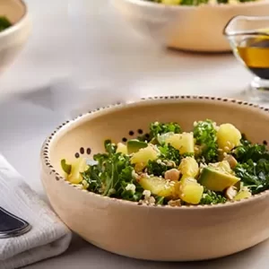
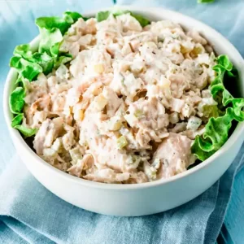
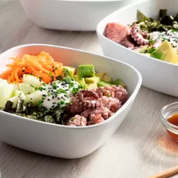

Vegetable Recipes
At San Marcos, we are excited to present a variety of delicious recipes that highlight the flavor and versatility of vegetables, using our San Marcos products.
Our products enhance the natural flavors of vegetables with a Mexican twist. Whether you prefer refreshing salads, tasty stir-fries, or creative side dishes,
at San Marcos we have everything you need to create dishes full of flavor and vitality. Join us on this culinary journey and discover how our San Marcos products
can elevate your vegetable recipes to new heights of flavor and delight. Get ready to enjoy an explosion of natural and authentic flavors in every bite of vegetable!

Quinoa, kale, and pineapple salad
Quinoa, kale, and pineapple salad

Lettuce tacos with spicy chicken
Lettuce tacos with spicy chicken

Chicken salad with vinaigrette and strips
Chicken salad with vinaigrette and strips

Rice bowl with vegetables and chipotle octopus
Rice bowl with vegetables and chipotle octopus